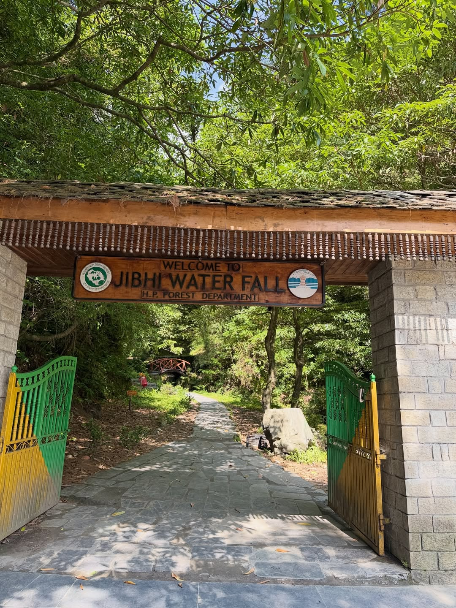
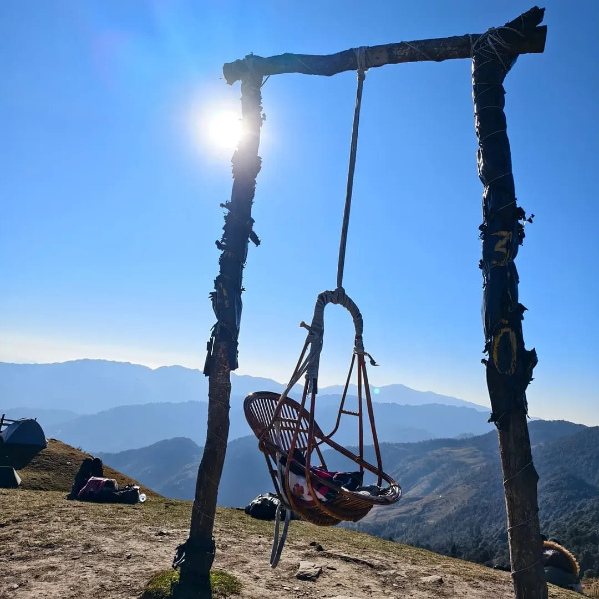
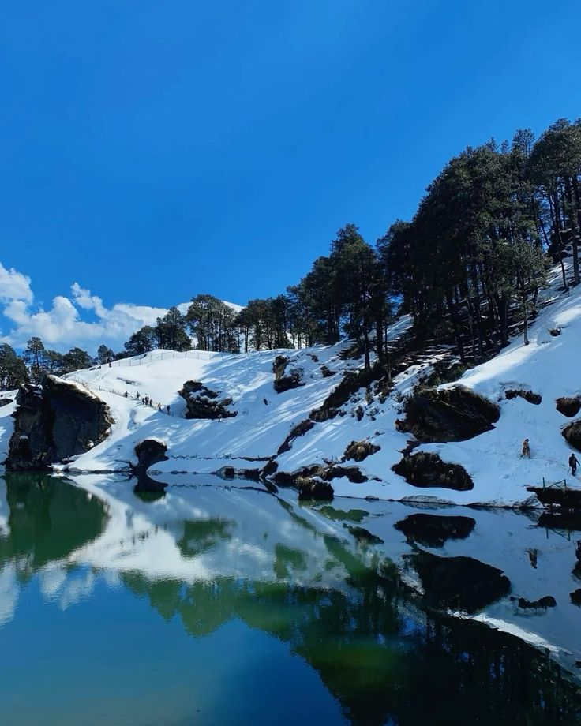
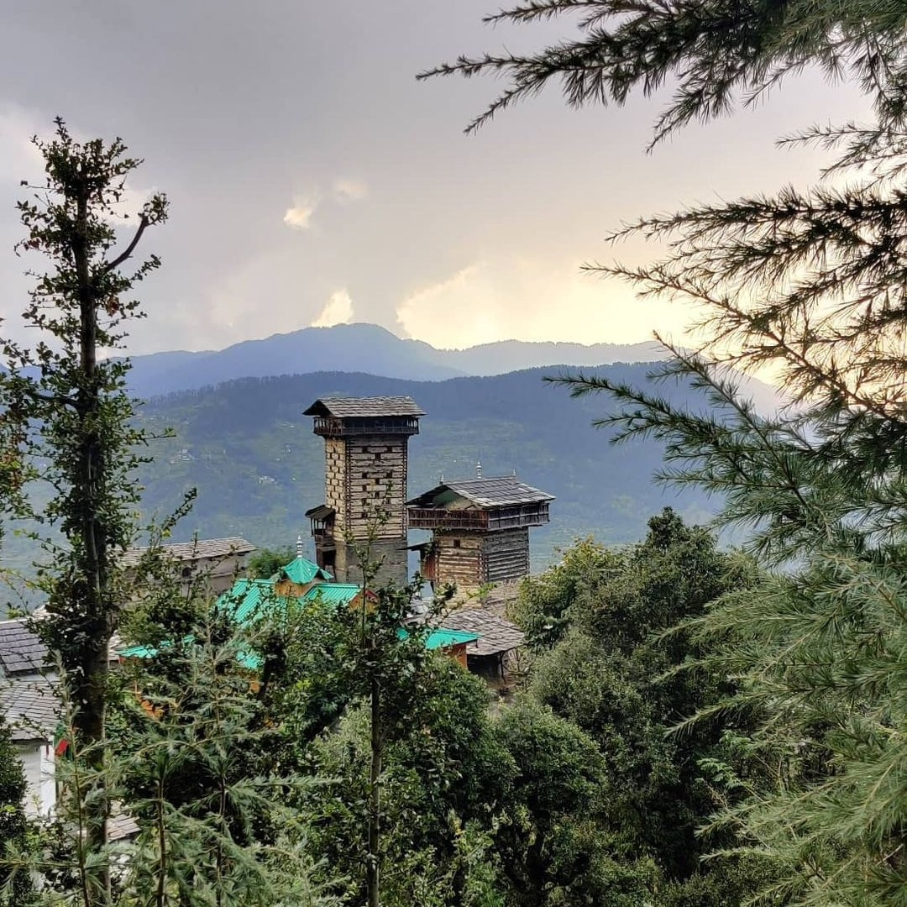
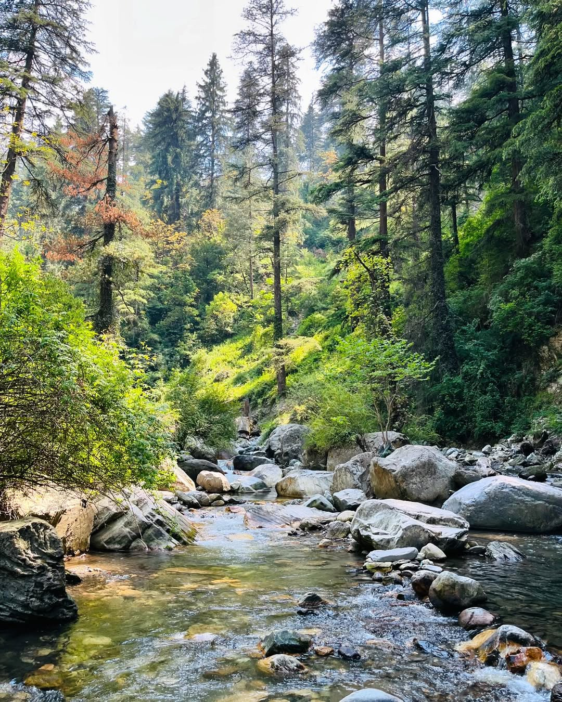
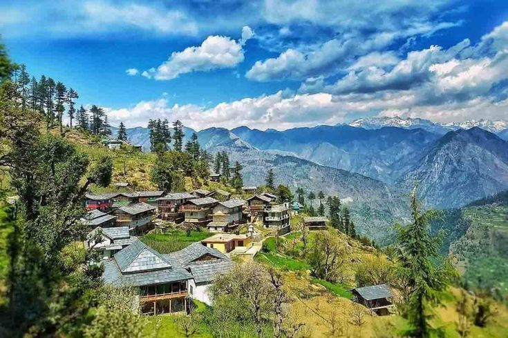
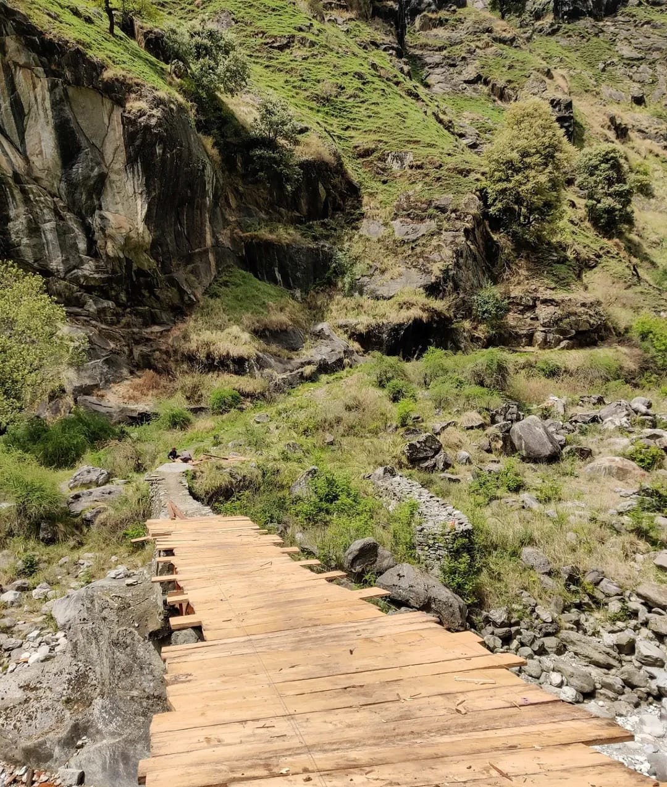
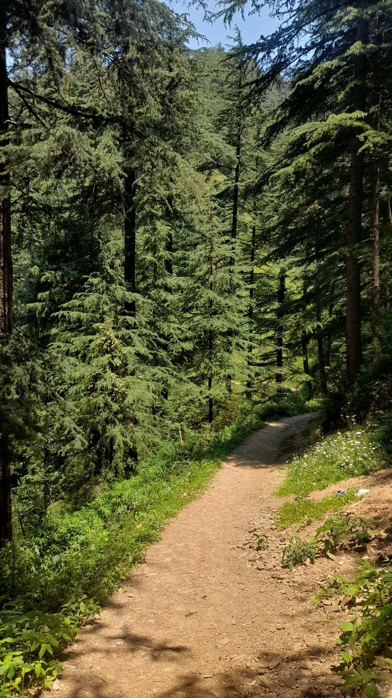

Discover The Magic
Around Every Corner.
From the misty Jibhi Waterfall to the soaring heights of Jalori Pass — adventure is never far at FAM.
Explore Around FAM
Every adventure begins just a few minutes away.

Jibhi Waterfall
Cascading waters surrounded by lush forest. The closest nature escape from FAM — a short, scenic walk through village paths.
Explore →
Jalori Pass
Stunning high-altitude views at 3,120 metres. One of Himachal's most scenic mountain passes, with sweeping panoramas of the Himalayas.
Explore →
Serolsar Lake
A beautiful 2 km trek from Jalori Pass through enchanting forests of oak and rhododendron, leading to a crystal-clear alpine mirror lake.
Explore →
Chehni Kothi
An ancient tower with historic architecture, standing tall in a heritage village. A step back in time through local village paths and traditional culture.
Explore →
Mini Thailand
A hidden riverside paradise in the heart of Jibhi. Crystal-blue waters surrounded by boulders and pine trees — perfect for a peaceful afternoon dip.
Explore →
Tirthan Valley
Trout fishing, riverside walks, and pristine natural beauty along the Tirthan River. A serene escape into one of Himachal's most picturesque valleys.
Explore →
Great Himalayan National Park
A UNESCO World Heritage Site home to exotic wildlife, alpine meadows, and breathtaking Himalayan vistas. A must-visit for nature lovers and trekkers.
Explore →
Forest Trails
Walk through ancient deodar forests starting right from the property. Peaceful nature trails winding through towering pines and the sounds of the forest.
Explore →Explore the Map
Click any attraction to discover more about your next adventure.